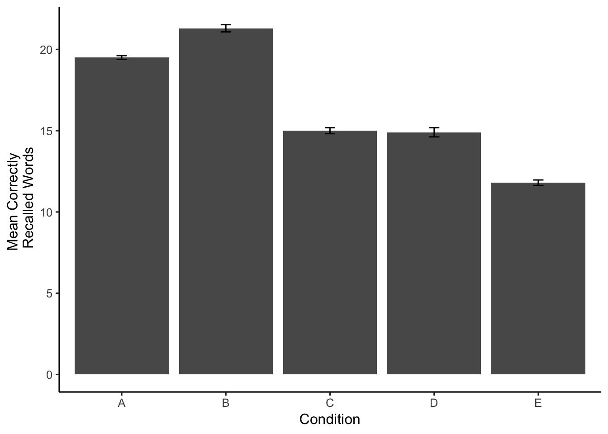

Chapter 4 MiniProject ONE (MEMORY)
In the first mini-project, you will read, summarize and discuss the paper by Nairne, Pandeirada, and Thompson (2008). Then, you will attempt to replicate their results in the lab, by conducting an experiment and analyzing the data.
4.1 What’s in store
Students read paper and write QALMRI (15-20)
Group discussion about paper (15-20)
Students attempt to replicate the major findings in the paper
Break into four-five groups, each group assigned an encoding condition (Survival, Pleasantness, Imagery, Self-reference, Intentional learning)
Each group picks their own 30 words. Can follow same procedure as in paper by choosing 30 words from Van Overschelde, Rawson, and Dunlosky (2004).
Groups try to run at least 10 participants in their condition, recording proportion of correctly recalled words
Groups enter their collected data into the master spreadsheet, which is given back to groups upon data completion
Discussion of how to analyze the data
Group attempt to analyze the data using t-tests and one-way ANOVA to determine if the survival framing produced better recall than the other conditions.
4.2 Data-analysis tips
In this mini-lab, you will be determining whether different kinds of manipulations improve your ability to recall lists of words. Each condition different subjects will read a list a words, and then recall as many as they can on a sheet of paper. Then, you will measure recall for each subject by counting the number of correctly recalled words. You will try to get at least 10 subjects in each condition, the more the merrier. The empirical question will be whether memory recall is differs across the conditions. If they do differ, then some of those conditions help you remember words better, and some conditions may hurt your ability to remember words. With these kinds of experiments, we can learn about the factors that influence our memory, as well as how cognitive processes allow us to encode and retrieve memories.
The new tool you be using here is a one-way ANOVA, which you may remember from your statistics classes. In particular, we will be performing an independent samples ANOVA, because we are conducting a between-subjects experiment, where different subjects contribute data in each of the conditions. More specifically, we will be conducting an omni-bus test. The omni-bus test is a catch-all test, that let’s us enter the data from as many conditions as we want, and ask the general question: are any of the conditions different from one another. This is different from a t-test, which only let’s us make a comparison between two conditions. In fact, the t-test and ANOVA are related, but this is a topic that we will leave for now. Except to say, that if you ran a t-test comparing two groups, or an ANOVA with only two groups, they would return the same p-values, because they are testing the same underlying question…which is the likelihood the observed occurs by chance alone.
One drawback about the ANOVA, is that it only tells us if there is some difference, any difference, among the conditions we are comparing. But, it does not tell us which specific conditions are different. Fortunately, after we conduct the ANOVA, we can run follow-up t-tests comparing any groups we want. We can also conduct more complex comparisons using linear contrasts, but that is a topic for another day as well.
We will again use to R to simulate a memory recall experiment with multiple conditions. Then, we will create fake data, plot the data, then analyze the data for differences using an ANOVA and follow-up tests.
4.2.1 Simulating the data
Consider an experiment with five different memorizing conditions. This will be a between-subjects experiment with 10 simulated subjects in each condition. We will have condition A, B, C, D, and E. To simulate data for each subject we need to make some assumptions. Let’s that out of 30 words most people remember about 15 of them, but there is variation, so some people do better and some people do worse. We can model this by sampling numbers randomly from a distribution of our choice. For convenience, we will use the normal distribution, which looks like bell-curve (should be familiar from statistics class). Let’s imagine that condition A and B help memory more than C and D, and that memory is worse in condition E. Take a look at the code and output for simulating this kind of data.
A<-round(rnorm(10,20,2))
B<-round(rnorm(10,20,2))
C<-round(rnorm(10,15,2))
D<-round(rnorm(10,15,2))
E<-round(rnorm(10,10,2))
all_data<-data.frame(A,B,C,D,E)
knitr::kable(all_data)| A | B | C | D | E |
|---|---|---|---|---|
| 19 | 20 | 15 | 13 | 13 |
| 20 | 25 | 15 | 14 | 11 |
| 19 | 22 | 17 | 14 | 12 |
| 19 | 22 | 19 | 20 | 11 |
| 19 | 17 | 13 | 16 | 12 |
| 22 | 21 | 13 | 17 | 12 |
| 19 | 19 | 14 | 11 | 9 |
| 19 | 23 | 14 | 12 | 15 |
| 18 | 22 | 15 | 18 | 10 |
| 21 | 22 | 15 | 14 | 13 |
We have produced a table with fake data for 10 subjects in each condition. The numbers all represent the number of correctly recalled words for each simulated subject. For groups A and B we sample 10 numbers, from a distribution with mean 20, and standard deviation 2. This is a higher mean than groups C and D (mean = 15). The lowest mean was for Group E (mean = 10). So, on average, groups A and B should have higher scores than C and D, which should be higher than E.
Ok, so what happened in our simulated experiment. We can see the numbers in the table, but it would be nice to summarize them so we can more easily look at differences. After all, it’s hard to make sense of a bunch of raw data in a table.
One way to summarize the data is to compute the group means for each condition. This averages over the subjects, and gives us only 5 means to look at, so it is easier to see the differences. We can “easily” do this in R in a couple different ways. However, R often likes the data in a particular format, in this case long-data format. So, we will first convert to that format, and see what it looks like.
long_data<-data.frame(Conditions=rep(c("A","B","C","D","E"),each=10),
Recall=c(A,B,C,D,E))
knitr::kable(long_data[1:25,])| Conditions | Recall |
|---|---|
| A | 19 |
| A | 20 |
| A | 19 |
| A | 19 |
| A | 19 |
| A | 22 |
| A | 19 |
| A | 19 |
| A | 18 |
| A | 21 |
| B | 20 |
| B | 25 |
| B | 22 |
| B | 22 |
| B | 17 |
| B | 21 |
| B | 19 |
| B | 23 |
| B | 22 |
| B | 22 |
| C | 15 |
| C | 15 |
| C | 17 |
| C | 19 |
| C | 13 |
I’ve only printed the first 25 lines, but the dataframe contains all of the data for conditions, C, D, and E as well. You can see why they call it long format. It’s because each data point gets it’s own row in the table.
4.2.2 Looking at the means
Now that the data is in long format we can easily make a table of the condition means
condition_means<-aggregate(Recall~Conditions,long_data,mean)
knitr::kable(condition_means)| Conditions | Recall |
|---|---|
| A | 19.5 |
| B | 21.3 |
| C | 15.0 |
| D | 14.9 |
| E | 11.8 |
We can now see the group means, but we can’t see any measure of how variable the data are in each condition. We might, for example, also want to compute the standard deviation as well as the mean, and put them both in the table. We could run the same code from above and substite sd for mean, which would give us a table of standard deviations. However, we will use a more advanced function from the plyr package, called ddply. ddply let’s you compute multiple statistics and put them all in a single table. The syntax is a bit different, but it doesn’t take long to get used to it.
library(plyr)
condition_means<-ddply(long_data,.(Conditions),summarise,
MeanRecall=mean(Recall),
StdDeviation=sd(Recall))
knitr::kable(condition_means)| Conditions | MeanRecall | StdDeviation |
|---|---|---|
| A | 19.5 | 1.178511 |
| B | 21.3 | 2.213594 |
| C | 15.0 | 1.825742 |
| D | 14.9 | 2.806738 |
| E | 11.8 | 1.686548 |
4.2.3 Plotting the data
It’s often very desirable to plot the data in a graph, rather than just present the means in a table. People find it easier to look at graphs, because the differences in the data just pop-out much easier than looking at numbers in a table. R has a fantastic graphing package called ggplot2. ggplot2 is a whole philosophy for visual design and data-presentation, and it can be daunting at first. But, it’s complexity makes it very powerful, and when you get the hang of it you can very quickly make all sorts of beautiful graphs to present data. Here is some code to make ggplot create a bar graph to plot the means, along with error bars. In this case the error bars with represent standard errors of the mean, rather than standard deviations. R does not have a built in function for the standard error of the mean, so we have to write it ourselves.
library(ggplot2)
sde<-function(x){sd(x)/length(x)}
plot_means<-ddply(long_data,.(Conditions),summarise,
MeanRecall=mean(Recall),
SE=sde(Recall))
limits <- aes(ymax = MeanRecall + SE, ymin = MeanRecall - SE)
ggplot(plot_means,aes(x=Conditions, y=MeanRecall))+
geom_bar(position="dodge",stat="identity")+
geom_errorbar(limits, width=.1)+
theme_classic(base_size=12)+
ylab("Mean Correctly \n Recalled Words")+
xlab("Condition")
Now it is easy to the differences between conditions. Just as we had hoped, Groups A and B appear to have recalled more words than Groups C and D, which remembered more words than group E.
4.2.4 Conducting the ANOVA
Although the graph and the tabe show some clear differences in the means, we still want to find out the probability that this kind of finding occurs by chance alone. We can be confident in the differences when we know that they do not occur very often by chance alone. The first step is conduct a one-way ANOVA. This is very easy in R.
You can also look at the examples of conducting one-factor ANOVAs in software using the lab manual from PSYC 3400 Introductory Statistics, and refresh your understanding of the ANOVA by reading the ANOVA chapter from the PSYC 3400 textbook.
aov.out<-aov(Recall~Conditions,long_data)We’re done! It’s only one line of code. However, we need a couple more to see the results.
library(xtable)
aov_summary<-summary(aov.out)
knitr::kable(xtable(aov_summary))| Df | Sum Sq | Mean Sq | F value | Pr(>F) | |
|---|---|---|---|---|---|
| Conditions | 4 | 589.4 | 147.350000 | 36.21382 | 0 |
| Residuals | 45 | 183.1 | 4.068889 | NA | NA |
The ANOVA table gives us a bunch of information. We will go into much greater detail about the meaning of each number in the table, but also assume for now that you are somewhat familiar with these ideas because you have already taken statistics, right?
We are mainly interested in the p-value, which tells how often results like the ones we found can occur by chance. But, when we report the results of our ANOVA, we also provide additional information about the F-value, the degrees of freedom values, and the mean squared error term. The reason is that if you know these numbers, you can actually reconstruct all of the other numbers. The results of our ANOVA are significant. You could report this in a sentence like the following.
The main effect of condition was significant, F(4, 45) = 36.21, MSE = 4.07, p < .001.
4.2.5 Comparisons between conditions
The p-value from above is much smaller than .05, which shows the difference between conditions in the data does not occur very often by chance alone. However, because we conducted an omni-bus test, we only know that there is some difference between conditions, but we do not know which specific conditions are different from one another.
So, we have to conduct additional tests between specific conditions. There are multiple strategies for conducting these tests. For now, we will simply run t-tests between comparisons of interest.
Remember, our data simulated the pattern that memory recall would be better for groups A and B, which would be better than groups C and D, which would better than group E. In other words A=B > C=D > E.
We can confirm this pattern by conducting tests to see if it holds up. For example, how would we test the pattern A=B > C=D > E, all of the following comparisons need to be true,
- A = B
- A > C
- A > D
- B > C
- B > D
- C = D
and, all of the conditions should be greater than E
- A > E
- B > E
- C > E
- D > E
Let’s conduct a few of these tests, and then report the findings.
library(broom)
#conduct t-tests
ab<-tidy(t.test(A,B,var.equal = TRUE))
ac<-tidy(t.test(A,C,var.equal = TRUE))
cd<-tidy(t.test(C,D,var.equal = TRUE))
de<-tidy(t.test(D,E,var.equal = TRUE))
#put the results in a table
alltests<-rbind(ab,ac,cd,de)
alltests<-cbind(alltests,Comparison=c("AB","AC","CD","DE"))
finaltable <- subset(alltests, select = c(Comparison,estimate1,estimate2,statistic,p.value,parameter))
knitr::kable(finaltable)| Comparison | estimate1 | estimate2 | statistic | p.value | parameter |
|---|---|---|---|---|---|
| AB | 19.5 | 21.3 | -2.2697893 | 0.0357435 | 18 |
| AC | 19.5 | 15.0 | 6.5484619 | 0.0000037 | 18 |
| CD | 15.0 | 14.9 | 0.0944443 | 0.9257996 | 18 |
| DE | 14.9 | 11.8 | 2.9937759 | 0.0077901 | 18 |
4.3 Writing it all up
The following is an example results section for our hypothetical experiment. This could serve as a model for your own results section.
The number of correctly recalled words for each subject in each condition were submitted to a one-way ANOVA, with memorization condition (A, B, C, D, and E) as the sole between-subjects factor. Mean recall scores in each condition are displayed in Figure 1.
The main effect of memorization condition was significant, F(4, 45) = 36.21, MSE = 4.07, p < .001. Figure 1 shows that Groups A and B had higher recall scores than Groups C and D, which had higher recall scores than Group E. This pattern was confirmed across four independent sample t-tests. Group A (M = 19.5) and Group B (M = 21.3) were not significantly different t(18) = -2.27, p =0.036. Group A recalled significantly more words than Group C (M = 15), t(18) = 6.55, p =0. Group C and Group D (M = 14.9) were not significantly different t(18) = 0.09, p =0.926. Finally, Group D recalled significantly more words than Group E (M = 11.8), t(18) = 2.99, p =0.008.
References
Nairne, James S., Josefa NS Pandeirada, and Sarah R. Thompson. 2008. “Adaptive Memory: The Comparative Value of Survival Processing.” Psychological Science 19 (2): 176–80.
Van Overschelde, James P., Katherine A. Rawson, and John Dunlosky. 2004. “Category Norms: An Updated and Expanded Version of the Norms.” Journal of Memory and Language 50 (3): 289–335.